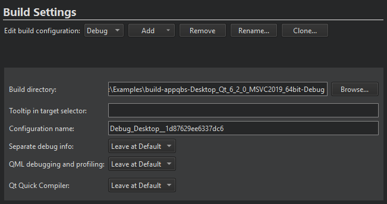
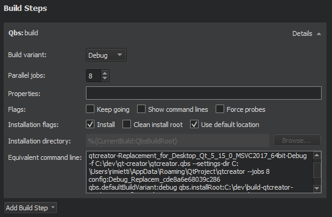
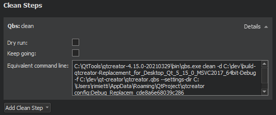

Qbs Build Configuration

Qbs builds projects in the directory specified in the Build Directory field.
In the Tooltip in target selector field, you can enter text that is displayed as a tooltip when you hover the mouse over the build configuration in the kit selector.
You can enter a name for the build configuration in the Configuration name field.
If debug info is being generated, you can have it placed into separate files, rather than embedded into the binary, by selecting Enable in the Separate debug info field. For more information, see Using the Performance Analyzer. To use default settings, select Leave at Default.
For more information about the QML and Qt Quick options, see Compiling QML.
For more information about configuring Qbs, see Setting Up Qbs.
Qbs Build Steps

To specify build steps for Qbs:
- In the Build variant field, select Debug to include debug symbols in the build for debugging the application and Release to create the final installation file.
- In the Parallel jobs field, specify the number of parallel jobs to use for building.
- In the Properties field, specify the properties to pass to the project. Use colons (:) to separate keys from values. For more information, see Modules in the Qbs Manual.
- In the Flags field:
- Select Keep going to continue building when errors occur, if possible.
- Select Show command lines to print actual command lines to the compile output pane instead of high-level descriptions.
- Select Force probes to force re-execution of the configure scripts of Probes.
- In the Installation flags field:
- Select Install to copy artifacts to their install location after building them. This option is enabled by default.
Note: On Windows, the build will fail if the application is running, because the executable file cannot be overwritten. To avoid this issue, you can deselect this check box and add a Qbs Install deployment step in the run settings that will be performed just before running the application.
- Select Clean install root to remove the contents of the install root directory before the build starts.
- Select Use default location to install the artifacts to the default location. Deselect the check box to specify another location in the Installation directory field.
- Select Install to copy artifacts to their install location after building them. This option is enabled by default.
If the kit specifies Qt for Android version 5.14.0 or later, you can select the ABIs for the Android device architectures to build the project for in the ABIs field.
The Equivalent command line field displays the build command that is constructed based on the selected options.
Qbs Clean Steps
When building with Qbs, you can specify flags in Clean Steps:

- Select Dry run to test cleaning without executing commands or making permanent changes to the build graph.
- Select Keep going to continue cleaning when errors occur, if possible.
The Equivalent command line field displays the clean command that is constructed based on the selected options.